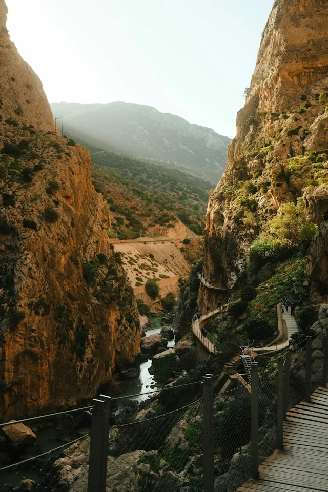

Original
Experiencias reales creadas a mano, sin circuitos masivos.
Viajes a medida para perderte un poco y volver con algo nuevo.
Planear mi viajeModo OOO
Experiencias reales creadas a mano, sin circuitos masivos.
Salir del punto de partida sin perder la esencia.
Hacer del mundo tu próximo destino sin filtros.
Selección OOO · 2026

